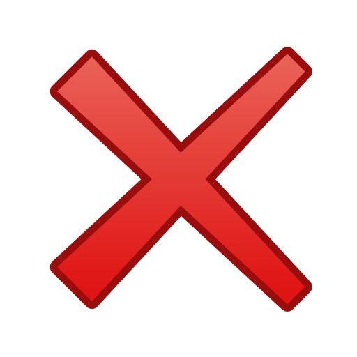

<div>
  <ion-list *ngIf="decks$ | async as decks; else loadingDecks">
    <ion-list-header>
      Your favorite decks
    </ion-list-header>

    <ion-card *ngFor="let deck of decks" [style]="styleBorderDeck()">
      <ion-item class="item-background-color">
        <ion-avatar slot="start">
          
        </ion-avatar>

        <ion-label class="ion-activatable ripple-parent">
          <h2>{{ deck.name }}</h2>
          <h3>{{ deck.format }}</h3>
          <p>
            <i *ngFor="let cor of deck.colors" class="ms {{cor}} ms-cost"></i>
          </p>
          <ion-ripple-effect></ion-ripple-effect>
        </ion-label>

        <ion-icon [color]="deck.favorite ? 'danger' : ''" [name]="deck.favorite ? 'heart' : 'heart-outline'"
          (click)="setFavoriteDeck(deck)"></ion-icon>
      </ion-item>
    </ion-card>
  </ion-list>

  <ng-template #loadingDecks>
    <div *ngIf="decksError$ | async; else loadingNoError">
      <div class="container-info">
        
        <p class="subtitle-error">Error loading decks!!!</p>
      </div>
    </div>

    <ng-template #loadingNoError>
      <div class="container-info">
        
        <p class="subtitle">No decks found.</p>
      </div>
    </ng-template>
  </ng-template>
</div>